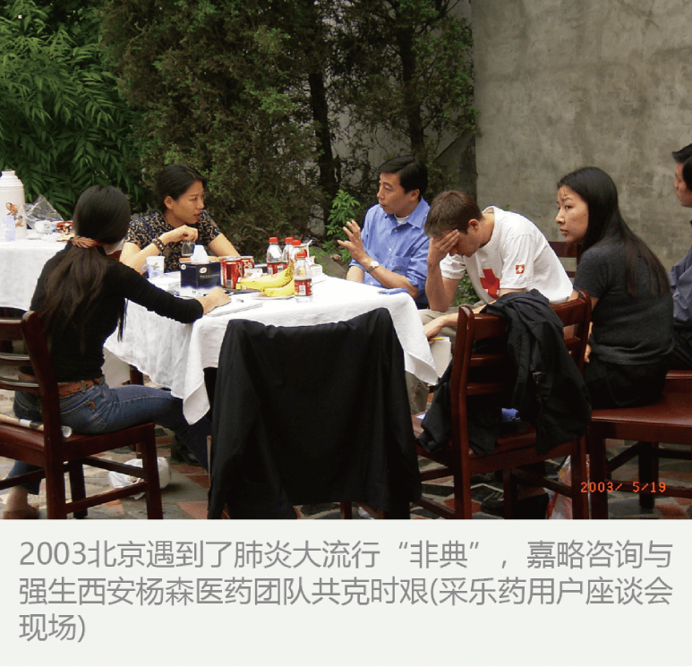
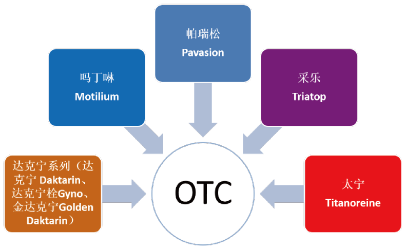
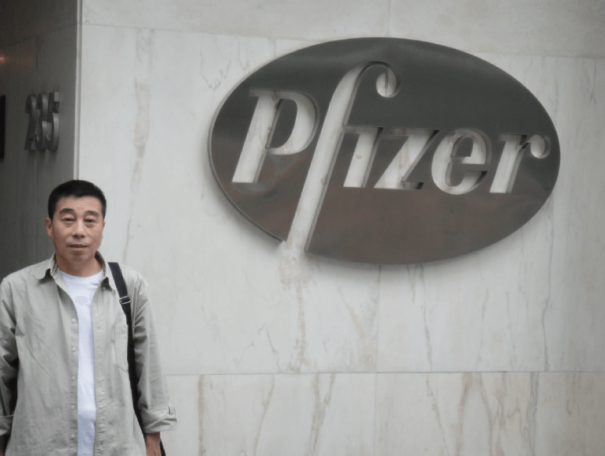
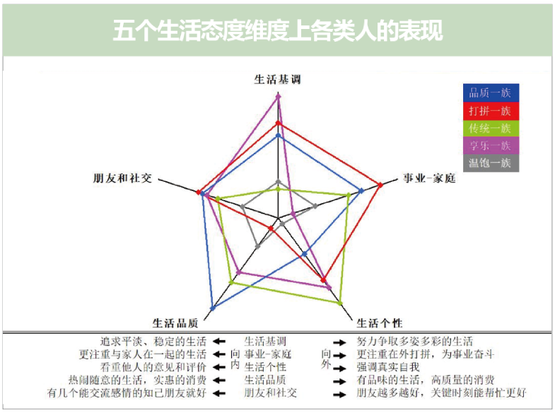
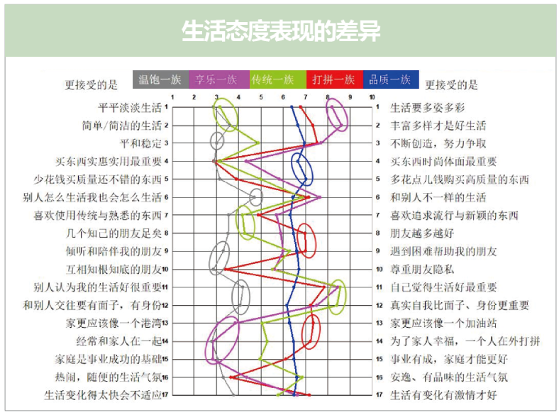
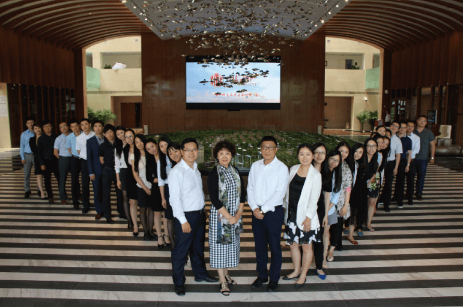

辅助中国OTC的黄埔军校-强生西安杨森
 西安杨森被称作中国医药界的黄埔军校，其OTC销售额在近20年中一直名列前茅，而其OTC销售额稳占公司总销售额的60%-70%。他在医药界是个奇迹，作为长期伙伴嘉略也深感自豪。 嘉略咨询从2003年开始全面服务杨森，覆盖OTC全部 系列品牌的研究。  嘉略的职业态度和高质量研究水准受到杨森高度认可。 2005年起处方Ox事业部也开始将部分研究项目交付给 處略咨询。
为辉瑞戒烟产品全球战略实施市场洞察
嘉略受邀为全球最大制药企业 Pfizer 当年重大战略品牌“畅沛〞提供大规模综合研究，帮助寻找全球市场机会。自2009-2012连续三年围绕商业目标，运用各种商业研究和人类学社会学方法展开研究。 第一阶段 Patient Flow 使用计算机辅助电话调查了 解中国北方和中原地区的戒烟市场，连续对10,000多个合格被访者接触访问，解析中国市场中健康人群和 慢性支气管炎和冠心病患者不同的戒烟想法，描画中国戒烟市场的广阔前景。 第二阶段 Patient Journey 对吸烟者中健康人和慢阻 肺和冠心病患者的戒烟历程进行大样本的定性和定量 研究，以想戒烟-决定戒烟-采取戒烟行动-戒烟成功的流程，解读戒烟人群心理和行动变化并量化关键营销节点数据。描绘中国戒烟市场现状和戒烟人群在戒烟过程中的心理及行为变化。 第三阶段 Ethnography 创新地采用人类学的一人种志研究〞方法追踪、观案、研究6类不同戒烟人群的戒烟心理及行为变化。 在医院里建立了渠道。这个大型研究的结果不仅使畅 沛品牌组和辉瑞明确了中国市场的总体策路，同时在 邵先生直接建议下，在全国的三甲医院呼吸科建立了 观察和销售畅沛戒烟药的直接渠道，帮助烟民戒烟。 
为华润雪花提供“巅峰人群”价值观研究
华润雪花啤酒是嘉路十几年的战略合作伙伴。 某年，企业即将进军超高档啤酒市场，委托嘉略将学术领域价值观硏究引入超高端啤酒新市场，并将此作为提升品牌形象的重要措施。如何大大拉升进入12元以上市场，如何找到这批人的偏好和媒体习惯？ 嘉略接受的委托时间要求短，研究规模十分庞大、覆盖10个城市，研究对象是具有影响力的四类人群：国家公务员、企业高管、文化媒体人员、私人企业主。总计1000位有钱有权的中国啤酒湖户，需要接触和甄别的人数和管理难度都很艰巨。 优秀的嘉略团队做到了！不仅应用调试了独创的 “嘉略 价值观研究模型〞，行走了八千里路云和月，精准勾勒 出五类人群，测试结果反映出他们不因城市和年龄不同，恰恰是个人的价值观对于雪花的电视广告有完全不同的反应，这个洞见对于企业营销决策者实在具有颠覆性的作用！ 在这个层层展开的巨型研究中，团队又秉持“挑战思维极限〞，突破性地将“定性〞挖掘进行“定量〞数据 化处理，以14道价值观打分问题，精准区隔清晰了啤酒爱好五个分类人群的具体喜好和选择。雪花市场人员 从此可以精准投放电视等不同媒体广告，嘉路研究团队为雪花的战略性市场行动当好了精准敏说的外脑和雷达！ 不同的生活态度表现，图表：  不同的价值观取向，图表： 
助力中信地产创造营销佳绩
如何使北京的地产别墅项目从瘫痪到劲销？ 嘉略顾问提供精准价格定位 训练接待流程 开盘三周大销6个亿 非常成功的经典商业案例 园满完成综合型管理咨询、 营销管理、别墅产品定价、制定开盘策略，为嘉略中信 地产集团北京公司半年内甩掉长期集团排名倒数第一的最差业绩史，2015年底跃升为集团第一，当年创造营业额22亿，实现了全年的经营目标！嘉略团队非常骄傲，也被客户誉为 “有脑有勇有为的杰出市场顾问” 